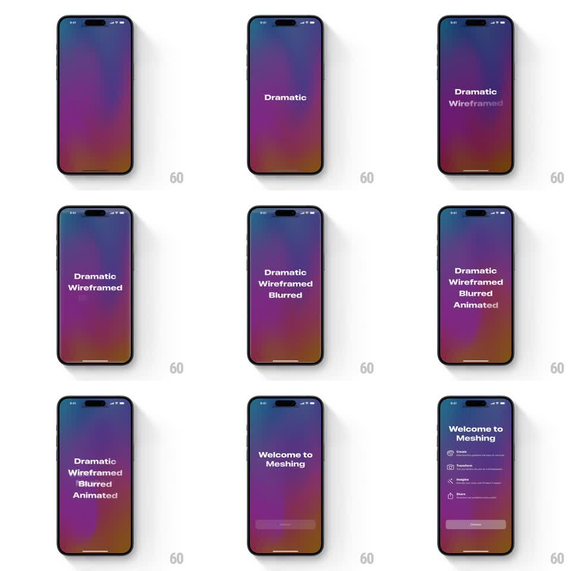

Media
Frame-by-frame

Rebuild this animation 1:1: Meshing's splash-to-onboarding - over a slowly shifting purple/orange mesh gradient, the words "Dramatic", "Wireframed", "Blurred", "Animated" unblur in one at a time, then give way to "Welcome to Meshing" and a staggered feature list.

Rebuild this animation 1:1: Meshing's splash-to-onboarding - over a slowly shifting purple/orange mesh gradient, the words "Dramatic", "Wireframed", "Blurred", "Animated" unblur in one at a time, then give way to "Welcome to Meshing" and a staggered feature list.
## Integration
Integration: stack-agnostic spec - springs given as stiffness/damping, timed motions as duration + curve; map every value to your framework and animation library of choice.
## Scene
Full-bleed animated mesh gradient (deep purple bleeding into magenta and warm orange). Centered bold white word stack, then a "Welcome to Meshing" onboarding screen with four icon + text rows (Create, Transform, Imagine, Share) and a Continue pill.
## Motion spec
Pattern: word-by-word unblur reveal over a live gradient.
- The mesh gradient drifts continuously (blob positions cycle on a ~12s loop, hues staying in the purple/orange family).
- Each word ("Dramatic", "Wireframed", "Blurred", "Animated") starts at blur 12px + opacity 0 and unblurs to sharp over 500ms, words landing 600ms apart, stacking into a centered column.
- Stack holds ~800ms, then all four words blur back out together (400ms) as "Welcome to Meshing" unblurs in (500ms).
- Feature rows stagger in from 12px below (fade + rise, 300ms each, 70ms apart); Continue fades in last (300ms).
## Calibration
- Text unblurs - it never slides; position is fixed from the start.
- The gradient must never stop moving, even during text transitions.
## Reduced motion
Gradient holds still; words crossfade without blur.
## Don't miss
- "Blurred" is itself the third word - keep the exact word order.
- Feature rows pair a small line icon with a bold verb and one-line description.